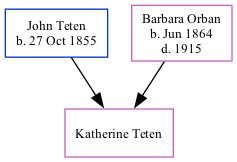

Katherine Elizabeth Teten 1906 -
[ Home ] | [ Surnames Index ] | [ Family History ]The child of John Teten and Barbara Orban, , Katherine is the great-great-aunt of Stephanie Hardesty (née Teten), was born in Otoe, Otoe, Nebraska, USA1,2,3,4.
During her life, she was living in Nebraska City Ward 4, Otoe, Nebraska in 19101; in Nebraska Ward 4, Otoe, Nebraska in 19202; in Nebraska City, Otoe, Nebraska in 19303 and in 19354; and in Midland, Gage, Nebraska, USA on Apr 1, 19404.
Parents
- John J was born on Oct 27, 1855
- Barbara was born in Jun 1864
Citations
- 1910 United States Federal Census Ancestry.com Operations Inc (Age in 1910: 4; Marital Status: Single; Relation to Head of House: Daughter)
- 1920 United States Federal Census Ancestry.com Operations Inc (Age: 13; Marital Status: Single; Relation to Head of House: Daughter)
- 1930 United States Federal Census Ancestry.com Operations Inc (Age: 23; Marital Status: Single; Relation to Head of House: Sister)
- 1940 United States Federal Census Ancestry.com Operations, Inc. (Age: 34; Marital Status: Single)
Family Tree
Data (GEDCOM) maintained by Jay Weston Hannah, Omaha, Nebraska, USA.
Website generated by ged2site. Last updated on Jun 18, 2024.